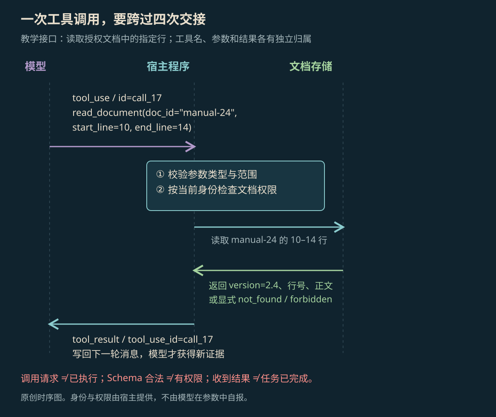

STRUCTURED ACTIONS
工具调用（Tool Calling）原理
AI 给出要用的工具和参数，应用实际执行，再把结果交回 AI。这篇解释工具定义、参数格式、调用编号，以及请求与结果怎样一一对应。
本页目录
AI 提出请求，程序执行工具#
Tool Calling，也叫 Function Calling，就是 AI 用约定好的格式，写出要用哪个工具、传哪些参数。真正读资料、查数据库或改文件的是执行程序。客户端工具由自己的应用执行，服务端工具则可由模型服务提供方执行；两者的运行位置不同。[1]
完整过程会用到四份数据：工具的用法说明、AI 发出的请求、工具的执行结果，以及带着结果再次发给 AI 的输入。AI 只说“我已经查过”，不能证明工具真的执行了。
工具名称、用途与参数格式#
工具定义要写明名称、用途和参数。用途说明帮助 AI 选择工具，Schema 则写清参数需要哪些字段、类型和范围。把 Schema 发给 AI，不等于每次返回的参数都检查过了，接收请求的应用仍要检查。
下面的 Schema 规定每个字段的格式和范围。required 表示哪些字段必填；additionalProperties: false 表示不能多传未列出的字段。这些关键词的含义见 JSON Schema 官方文档。[3]
{
"name": "read_document",
"description": "读取当前用户有权访问的文档行，返回版本、行号和正文",
"input_schema": {
"type": "object",
"properties": {
"doc_id": {"type": "string"},
"start_line": {"type": "integer", "minimum": 1},
"end_line": {"type": "integer", "minimum": 1}
},
"required": ["doc_id", "start_line", "end_line"],
"additionalProperties": false
}
}但它仍允许 start_line=20, end_line=10，因为两项都是正整数。结束行是否小于开始行、一次最多能读几行、当前用户能否读这份文档，还要由应用继续检查。只规定字段类型，管不到这些实际用法。
一次工具调用的完整过程#
- 应用把工具定义随任务提供给模型。
- 模型返回工具名、参数和本次调用 ID。
- 应用检查工具和参数是否有效，当前用户能否访问指定对象。
- 执行程序访问外部系统，得到结果或错误。
- 应用把结果与对应调用 ID 一起加入历史消息，再调用模型。
- AI 根据返回结果继续用工具，或给出最终回答。

放大查看 ↗工具说明在调用前告诉 AI“能做什么、参数怎样写”；调用 ID 则标记“这份结果对应哪次请求”。同一轮调用多个工具时，只看工具名分不清结果。文档 B 的内容若被接到文档 A 的请求上，JSON 格式可能没错，回答却会引错资料。
工具结果要放进下一次模型输入，AI 才能使用。日志里记了“已读文档”，下一次却只告诉 AI“成功”，AI 仍不知道文档写了什么。实际内容还留在应用里，没有交到 AI 手中。
请求与结果怎样配对#
下面使用 Claude Messages 的客户端工具消息格式，展示请求和结果，省略其他请求字段。assistant 消息中的 tool_use 是 AI 发出的工具请求；下一条 user 消息中的 tool_result 是应用交回的工具结果。其他模型接口可能使用不同的角色和字段，不能混着写。[1]
[
{
"role": "assistant",
"content": [
{
"type": "tool_use",
"id": "call_17",
"name": "read_document",
"input": {
"doc_id": "D24",
"start_line": 12,
"end_line": 14
}
}
]
},
{
"role": "user",
"content": [
{
"type": "tool_result",
"tool_use_id": "call_17",
"content": "{\"status\": \"ok\", \"doc_id\": \"D24\", \"version\": \"2.4\", \"lines\": [\"request_timeout_ms = 8000\"]}"
}
]
}
]id 与 tool_use_id 把结果和请求对起来。工具名只说明做哪类事情，分不清对同一工具的多次调用。结果中的 version、正文和行范围说明实际读到了什么。下一次输入要带上原请求和对应结果，不能只说“成功”。
应用怎样检查参数和返回错误#
下面展示应用检查请求的做法。identity 来自已经登录的用户会话。文档是否存在、用户是否有权读取，是两项不同检查。是否向用户分别说明“不存在”和“无权访问”，由产品决定，避免错误消息泄露本来不该透露的信息。
def read_document(args, identity, store):
start, end = args["start_line"], args["end_line"]
if end < start or end - start + 1 > 80:
return {"status": "invalid_range", "max_lines": 80}
if not store.allowed(identity, args["doc_id"]):
return {"status": "unavailable"}
doc = store.read(args["doc_id"])
return {
"status": "ok", "doc_id": args["doc_id"],
"version": doc.version, "start_line": start,
"lines": doc.lines[start - 1:end],
}如果返回“行范围反了”，AI 可以改参数；如果返回“资料不可用”，它可以换一个有权访问的来源，或说明缺少资料。如果所有错误都只返回空字符串，AI 就分不清是没有内容、工具坏了，还是没有权限。返回明确的错误类别，是为了分清这些情况，不是为了无限重试。
工具做多大、返回多少内容#
一个工具若能访问任意网址、路径或 SQL 查询，AI 就要同时决定语法、权限和具体对象。反过来，拆成一百个几乎同名的工具，也会让选择更困难。工具负责多大范围，要看任务需要：本例按文档 ID 读指定行，足以核对引用；若还不知道该读哪份资料，就需要搜索工具。官方指南也强调，用途说明、参数和示例会影响 AI 能否选对工具。[2]
返回多少内容，也取决于 AI 接下来要判断什么。整份长文可能掩盖重点，只返回“成功”又没有资料可用。带版本和行号的片段既能作为引用，不够时也能继续读。可以附上摘要，但仍要能找到原文片段和来源。
分别检查请求、执行与回答#
| 输入或环境 | 应用返回 | 之后怎样处理 |
|---|---|---|
| 行范围正确、允许读取 | ok + version + lines | 引用具体版本与行 |
| end 小于 start | invalid_range | 修正范围 |
| 文档不可用 | unavailable | 换来源或说明限制 |
| 存储暂时超时 | timeout + retryable 标记 | 看剩余额度和重试规则再决定 |
测试需要分开看：参数是否符合 Schema，工具是否真的执行，错误是否说明白，结果是否接回正确请求。最后再检查 AI 根据这些结果写出的答案。把所有步骤混成一个“工具调用成功率”，就难以知道错在请求、执行、传回结果，还是最后回答。
参考资料
论文、官方文档与案例依据。
- [1]Tool use with Claude ↗
官方工具往返与客户端/服务端执行边界。
- [2]Define tools ↗
官方工具名称、描述与输入 Schema 定义。
- [3]JSON Schema：Object ↗
JSON Schema 官方对象规则；格式约束不能替代业务权限。